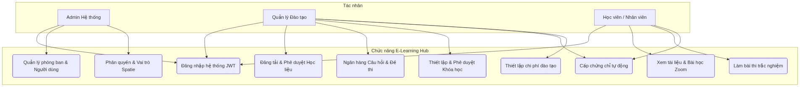
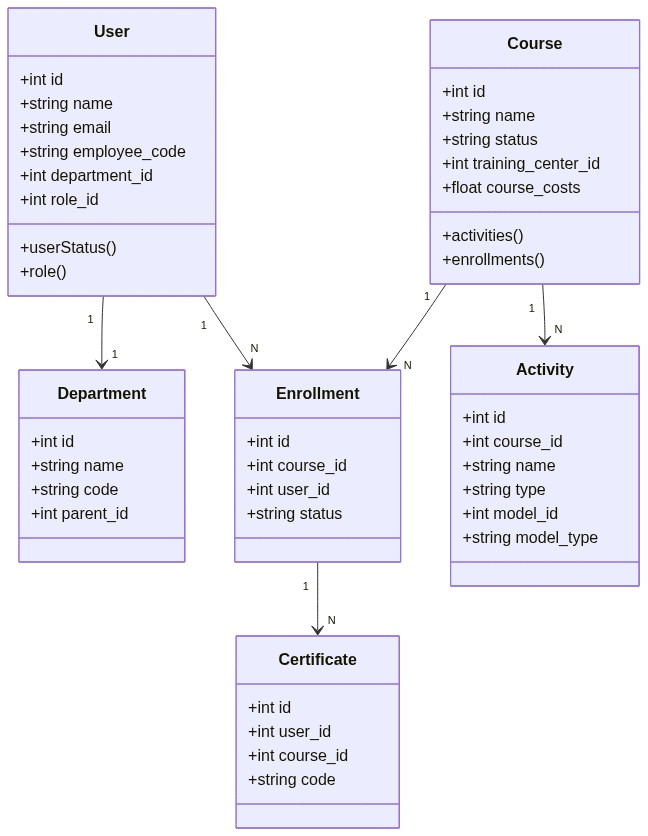

Hà Nội, 2026
PHẦN MỞ ĐẦU
Trong xu hướng chuyển đổi số mạnh mẽ của các tập đoàn đa ngành quy mô lớn, đào tạo nội bộ đóng vai trò then chốt để duy trì và nâng cao năng lực đội ngũ nhân sự. Với quy mô hàng chục nghìn nhân viên hoạt động tại các trung tâm đào tạo, công ty thành viên của THACO AGRI và THADICO trên toàn quốc, việc quản lý đào tạo thủ công hoặc thiếu tập trung đã bộc lộ nhiều hạn chế về mặt chi phí, hiệu quả và khả năng kiểm soát chất lượng.
Hệ thống quản lý đào tạo trực tuyến E-Learning Hub được phát triển nhằm mục tiêu chuẩn hóa, số hóa toàn bộ hoạt động đào tạo tại THACO AGRI và THADICO. Hệ thống cung cấp giải pháp toàn diện từ quản lý học liệu, tổ chức khóa học trực tuyến (Zoom) kết hợp ngoại tuyến (Classroom), ngân hàng câu hỏi, ngân hàng đề thi, cấp chứng chỉ tự động và theo dõi chi phí đào tạo chi tiết cho từng cá nhân, phòng ban.
Mục tiêu của hệ thống:
- Xây dựng nền tảng học tập trực tuyến linh hoạt, cho phép học viên truy cập nội dung học tập mọi lúc, mọi nơi.
- Quản lý, kiểm soát quy trình phê duyệt nghiêm ngặt đối với học liệu và các khóa học trước khi xuất bản.
- Hỗ trợ nhiều mô hình học tập kết hợp (Blended Learning): tự học qua tài liệu, học trực tuyến qua Zoom, học trực tiếp trên lớp.
- Tự động hóa đánh giá kết quả học tập qua bài thi trực quan và cấp chứng chỉ số theo phôi mẫu của từng đơn vị đào tạo.
- Theo dõi, tối ưu hóa ngân sách và chi phí đào tạo thực tế của doanh nghiệp.
CHƯƠNG 1. THU THẬP YÊU CẦU
Hoạt động phân tích nghiệp vụ đã làm rõ các yêu cầu về nghiệp vụ đào tạo thực tế tại doanh nghiệp, từ đó phân loại thành các yêu cầu chức năng, tác nhân người dùng, phi chức năng và yêu cầu dữ liệu hệ thống.
1.1.1. Yêu cầu chức năng
Hệ thống E-Learning Hub bao gồm các nhóm chức năng cốt lõi sau:
a) Quản lý cơ cấu tổ chức và người dùng (Organization Module):
- Quản lý Phòng ban (Departments): Tạo cấu trúc phân nhánh cây phòng ban (Multi-level Departments). Đồng bộ cấu trúc phòng ban từ hệ thống nhân sự tập đoàn.
- Quản lý Trung tâm đào tạo (Training Centers): Quản lý thông tin chi tiết các trung tâm đào tạo trực thuộc, liên kết với địa bàn hành chính (Tỉnh/Thành phố, Quận/Huyện, Xã/Phường).
- Quản lý Người dùng (Users): Quản lý hồ sơ nhân viên, mã nhân viên, chức danh công việc, phòng ban trực thuộc, trung tâm đào tạo quản lý, trạng thái hoạt động.
b) Quản lý Vai trò và Phân quyền (Role & Permission Management):
- Hệ thống sử dụng mô hình RBAC (Role-Based Access Control) kết hợp phân quyền nâng cao cho phép:
- Tạo vai trò mới (Admin hệ thống, Quản lý đào tạo, Giáo viên, Học viên).
- Phân chi tiết quyền hạn truy cập (Xem, Thêm, Sửa, Xóa, Phê duyệt) đối với từng phân hệ: Khóa học, Học liệu, Đề thi, Chứng chỉ.
c) Quản lý Học liệu (Material Management):
- Đăng tải học liệu: Hỗ trợ nhiều định dạng tài liệu (PDF, Video, Slide bài giảng trực tiếp).
- Quy trình phê duyệt học liệu: Trạng thái học liệu được kiểm soát chặt chẽ (Nháp -> Chờ phê duyệt -> Đã duyệt/Hoạt động -> Hết hiệu lực). Cho phép khôi phục học liệu hoặc thiết lập hết hạn dùng.
d) Ngân hàng câu hỏi và Đề thi (Question & Exam Bank):
- Ngân hàng câu hỏi: Quản lý danh mục câu hỏi theo chuyên ngành, chuyên đề, mức độ khó/dễ. Hỗ trợ câu hỏi trắc nghiệm một lựa chọn, nhiều lựa chọn, tự luận, câu hỏi cha-con (mixed questions).
- Ngân hàng đề thi (Quizzes): Thiết lập cấu trúc đề thi, số lượng câu hỏi, thời gian làm bài, điểm đạt (passing score). Hỗ trợ nhân bản đề thi để tái sử dụng.
e) Quản lý Khóa học (Course Management):
- Thiết lập khóa học: Tạo khóa học mới, cấu hình hình thức học (Trực tuyến, Trực tiếp, Tự học hoặc Kết hợp), thiết lập điều kiện học theo thứ tự nội dung.
- Quản lý nội dung học tập (Activities): Cấu trúc khóa học chia thành các nhóm bài học (Session). Mỗi bài học chứa các hoạt động học tập đa dạng (Material - Học liệu, Classroom - Lịch học trực tiếp, Zoom - Học trực tuyến, Test - Bài kiểm tra).
- Phê duyệt khóa học: Quy trình duyệt khóa học trước khi công khai cho học viên đăng ký hoặc chỉ định bắt buộc tham gia.
- Nhân bản khóa học: Sao chép cấu trúc khóa học cũ sang khóa học mới nhanh chóng.
f) Học tập và Theo dõi tiến trình (Student Portal):
- Trình phát nội dung học tập (Course Player): Giao diện học tập tối ưu hỗ trợ học viên xem tài liệu PDF trực tiếp, xem video, tham gia lớp học Zoom trực tiếp và làm bài thi kiểm tra ngay trên hệ thống.
- Theo dõi tiến độ học tập (Progress Tracking): Tự động ghi nhận thời gian học tập, trạng thái hoàn thành từng hoạt động của học viên để tổng hợp tiến độ khóa học (% Course Completion).
g) Quản lý Phôi và Cấp chứng chỉ (Certificate Management):
- Quản lý phôi chứng chỉ (Templates): Thiết kế mẫu chứng chỉ trực quan, định dạng nền, cấu hình chữ chữ ký hiển thị và căn chỉnh thông tin tự động trên phôi chứng chỉ.
- Cấp chứng chỉ: Tự động phát hành chứng chỉ số khi học viên hoàn thành khóa học đạt chuẩn. Hỗ trợ import/upload chứng chỉ ngoài nếu đào tạo từ đơn vị liên kết.
h) Thiết lập và Theo dõi Chi phí (Cost Setup):
- Thiết lập chi phí cụ thể cho từng khóa học bao gồm: Chi phí đứng lớp của giảng viên, chi phí học liệu, chi phí cam kết đào tạo đối với từng học viên khi tham gia học tập.
1.1.2. Yêu cầu về người dùng hệ thống
Hệ thống phục vụ 3 nhóm đối tượng người dùng chính với nhu cầu tương tác khác nhau:
| Tác nhân (Actor) | Mô tả | Chức năng chính |
|---|---|---|
| Admin hệ thống | Quản trị viên kỹ thuật toàn hệ thống | Quản lý người dùng, phân quyền nhóm vai trò, đồng bộ phòng ban, thiết lập cấu hình hệ thống, quản lý cơ sở dữ liệu. |
| Quản lý Đào tạo / Giáo viên | Nhân sự phòng nhân sự/đào tạo của doanh nghiệp | Đăng tải học liệu, soạn thảo câu hỏi/đề thi, thiết lập khóa học, duyệt học viên, theo dõi chi phí, phê duyệt tài liệu, chấm thi tự luận. |
| Học viên (Nhân viên) | Cán bộ nhân viên tập đoàn cần tham gia đào tạo | Đăng ký khóa học, xem tài liệu bài học, tham gia lớp học trực tuyến qua Zoom, điểm danh lớp offline, làm bài thi kiểm tra, nhận chứng chỉ số. |
1.1.3. Yêu cầu phi chức năng
- Kiến trúc Đa cơ sở dữ liệu (Multi-Database): Để đáp ứng tải dữ liệu lớn và phân tách nghiệp vụ rõ ràng, hệ thống được cấu hình phân tán trên 4 cơ sở dữ liệu PostgreSQL độc lập:
organization-db: Lưu trữ thông tin nhân sự, phòng ban, phân quyền Spatie.learning-db: Lưu trữ cấu trúc khóa học, học liệu, hoạt động giảng dạy, chứng chỉ.exam-db: Lưu trữ ngân hàng câu hỏi, đề thi và lịch sử làm bài thi.utility-db: Lưu trữ file tải lên, thông báo, nhật ký hành động (action logs), email.
- Bảo mật hệ thống: Xác thực và phân quyền API bằng cơ chế JWT token (Laravel Sanctum). Tất cả mật khẩu người dùng phải được mã hóa bằng chuẩn Argon2 hoặc BCrypt.
- Hiệu năng xử lý: Thời gian phản hồi API trung bình dưới 300ms. Sử dụng cơ chế SWR (Stale-While-Revalidate) phía Frontend để lưu trữ đệm dữ liệu tạm thời, hạn chế truy vấn API trùng lặp lên máy chủ.
- Khả dụng và Tương thích: Giao diện responsive trên các trình duyệt Desktop và thiết bị di động.
- Đồng bộ dữ liệu: Khả năng đồng bộ hóa không đồng bộ (Asynchronous Sync) dữ liệu nhân sự và phòng ban từ hệ thống tổng của THACO AGRI.
1.1.4. Yêu cầu về dữ liệu
- Tính toàn vẹn dữ liệu: Tất cả các thực thể nghiệp vụ phải thừa kế cơ chế lưu trữ Audit trail (ghi nhận thời điểm tạo, chỉnh sửa và người thực hiện tác vụ).
- Xóa mềm (Soft Delete): Đảm bảo an toàn thông tin, không xóa trực tiếp bản ghi khỏi DB vật lý khi người dùng thực hiện thao tác "Xóa" trên giao diện (sử dụng thuộc tính
deleted_at). - Quản lý tệp tin tập trung: Hỗ trợ lưu trữ đa phương tiện (PDF, MP4, JPEG) thông qua hệ thống lưu trữ tập trung (MinIO hoặc S3), thông tin tệp tin được quản lý tại bảng
filescủa DB Utility.
1.2. Biểu đồ use case
1.2.1. Biểu đồ use case tổng quát:

1.2.2. Biểu đồ use case phân rã các phân hệ nghiệp vụ:
Dưới đây là biểu đồ Use Case chi tiết cho từng phân hệ chức năng cốt lõi của hệ thống E-Learning Hub:
a) Phân hệ Quản lý Tổ chức & Người dùng
Phân hệ này cho phép Admin hệ thống quản lý cơ cấu tổ chức phòng ban theo mô hình cây phân cấp nhiều tầng và thực hiện đồng bộ hóa hồ sơ người dùng, mã nhân viên trực tiếp từ hệ thống quản lý nhân sự tập đoàn của THACO AGRI.

b) Phân hệ Vai trò & Phân quyền (RBAC)
Hệ thống cho phép cấu hình phân quyền chi tiết cho từng chức năng (Thêm, Sửa, Xóa, Phê duyệt) gắn liền với từng phân hệ nghiệp vụ (Khóa học, Học liệu, Đề thi, Chứng chỉ) và gán vai trò tương ứng cho người dùng.
.png)
c) Phân hệ Quản lý Học liệu
Quản lý Đào tạo và Giáo viên có thể đăng tải tài liệu học tập với nhiều định dạng khác nhau. Các tài liệu sau khi đăng tải sẽ đi qua quy trình phê duyệt bắt buộc của Admin trước khi chính thức xuất bản cho học viên.
.png)
d) Phân hệ Ngân hàng Câu hỏi & Đề thi
Hỗ trợ soạn thảo các câu hỏi đa dạng (trắc nghiệm, tự luận, câu hỏi ghép cha-con) và quản lý theo danh mục chuyên đề. Giáo viên có thể thiết lập cấu trúc đề thi và nhân bản đề thi nhanh chóng từ các biểu mẫu có sẵn.
.png)
e) Phân hệ Quản lý Khóa học
Quản lý đào tạo thiết lập thông tin khóa học, hình thức học tập (Trực tuyến Zoom, Trực tiếp Classroom, Tự học hoặc Blended), tạo bài học (Sessions) và các hoạt động học tập, đồng thời thiết lập các điều kiện ràng buộc tiến trình học tập.
.png)
f) Phân hệ Học tập & Theo dõi Tiến trình
Học viên tham gia khóa học thông qua trình phát bài học (Course Player) để tích lũy thời gian học tập, làm bài kiểm tra trắc nghiệm hoặc nộp bài tự luận để giáo viên chấm điểm thủ công.
.png)
g) Phân hệ Quản lý Phôi & Cấp Chứng chỉ
Hỗ trợ giáo viên thiết kế phôi chứng chỉ (định dạng nền, chữ ký, căn lề). Hệ thống tự động ghi nhận khi học viên hoàn thành khóa học đạt chuẩn và phát hành chứng chỉ số tương ứng.
.png)
h) Phân hệ Thiết lập & Theo dõi Chi phí
Hỗ trợ thiết lập các định mức chi phí cho khóa học bao gồm chi phí đứng lớp, chi phí học liệu và chi phí cam kết ràng buộc đối với học viên để phục vụ công tác đối soát tài chính đào tạo.
.png)
Bảng mô tả Use Case chi tiết — UC04: Học tập và làm bài kiểm tra:
| Tên Use Case | UC04 — Học tập và làm bài kiểm tra |
| Tác nhân | Học viên (Nhân viên) |
| Mô tả | Học viên tiến hành xem nội dung bài học trong trình phát và hoàn thành bài thi trắc nghiệm đánh giá. |
| Điều kiện tiên quyết | Học viên đã được ghi danh (Enrollment) vào khóa học. |
| Luồng chính |
1. Học viên vào "Khóa học của tôi" -> chọn khóa học đang diễn ra. 2. Nhấp vào các hoạt động (Xem tài liệu PDF hoặc xem video). Hệ thống ghi nhận tiến trình học tập. 3. Nhấp vào bài kiểm tra (Test/Examination) -> "Bắt đầu làm bài". 4. Trả lời các câu hỏi trắc nghiệm trong thời gian đếm ngược. 5. Nhấn "Nộp bài". Hệ thống chấm điểm tự động dựa trên đáp án ngân hàng câu hỏi. 6. Hiển thị kết quả đạt/không đạt ngay lập tức. |
| Luồng thay thế |
4a. Hết thời gian làm bài -> Hệ thống tự động nộp bài thi của học viên. 5a. Bài thi có câu hỏi tự luận -> Trạng thái bài thi là "Chờ chấm điểm" cho đến khi giáo viên chấm bài. |
| Kết quả | Hệ thống lưu kết quả thi (Score, Correct Count) vào bảng quiz_attempts. |
CHƯƠNG 2. PHÂN TÍCH
2.1. Các thẻ CRC
Các lớp nghiệp vụ then chốt trong hệ thống được định nghĩa qua các thẻ CRC:
| Lớp (Class) | Trách nhiệm (Responsibilities) | Cộng tác (Collaborators) |
|---|---|---|
| User |
- Lưu trữ thông tin nhân viên, email, mã nhân viên. - Xác thực truy cập và liên kết vai trò của hệ thống. - Liên kết với phòng ban và trung tâm đào tạo. |
Department, Role, Enrollment, QuizAttempt |
| Course |
- Quản lý thông tin chung khóa học (Thời gian bắt đầu, kết thúc, chi phí). - Liên kết các hoạt động học tập. - Quản lý học viên đăng ký tham gia. |
Activity, Enrollment, TrainingCenter |
| Activity |
- Đại diện cho một hoạt động học tập (Slide, Zoom, Lịch học, Bài thi). - Quản lý vị trí bài học hiển thị cho học viên. - Theo dõi tiến độ hoàn thành hoạt động. |
Course, Material, Quiz, ActivityProgress |
2.2. Biểu đồ lớp (Class Diagram)
Biểu đồ lớp dưới đây thể hiện cấu trúc tĩnh và mối liên kết logic giữa các Model Laravel thuộc các database khác nhau:

2.3. Biểu đồ tuần tự
Luồng 1: Tiến trình học viên làm bài kiểm tra trắc nghiệm (Quiz Taking):
2.4.1. Xác định các thực thể và thuộc tính
| Bảng dữ liệu | Thuộc tính chính | Kiểu dữ liệu | Mô tả |
|---|---|---|---|
users |
id, name, email, employee_code, password, department_id, status | BIGINT (PK), VARCHAR, VARCHAR, VARCHAR, VARCHAR, INT, VARCHAR | Lưu trữ hồ sơ nhân sự của nhân viên tập đoàn. |
courses |
id, name, status, form_of_learning, start, end, training_center_id | BIGINT (PK), VARCHAR, VARCHAR, VARCHAR, TIMESTAMP, TIMESTAMP, INT | Lưu trữ thông tin khóa học và hình thức đào tạo. |
activities |
id, course_id, name, type, model_id, model_type, position | BIGINT (PK), BIGINT (FK), VARCHAR, VARCHAR, BIGINT, VARCHAR, INT | Các hoạt động học tập đa hình trong bài giảng. |
2.4.2. Sơ đồ cơ sở dữ liệu quan hệ (ERD)
CHƯƠNG 3. THIẾT KẾ HỆ THỐNG
3.1. Kiến trúc tổng quan của hệ thống
Hệ thống được xây dựng theo mô hình Client-Server 3 tầng phi trạng thái:
- Tầng giao diện (React SPA): Xử lý toàn bộ logic hiển thị, lưu trữ JWT Token phía client, tương tác mượt mà thông qua thư viện UI tùy biến.
- Tầng logic API (Laravel): Đóng vai trò làm Gateway tiếp nhận dữ liệu xác thực, xử lý các logic nghiệp vụ thông qua cấu trúc phân chia Module độc lập.
- Tầng dữ liệu (PostgreSQL): Lưu trữ dữ liệu phân tán ở 4 cơ sở dữ liệu độc lập, điều phối qua cấu hình kết nối động.
3.1.1. Phân hệ API Gateway (Kong & Konga)
Để tối ưu hóa quản lý traffic, phân tải và bảo mật luồng thông tin giữa các dịch vụ trong môi trường Docker, hệ thống tích hợp giải pháp Kong API Gateway kết hợp với giao diện quản trị Konga:
- Kong Gateway: Đóng vai trò là điểm truy cập duy nhất (Single Entry Point) cho toàn bộ các request từ ứng dụng React Frontend. Kong tiếp nhận các request dạng
api.elearning.thadico.vnvà định tuyến (Routing) chính xác đến container Laravel API chạy trong mạng Docker nội bộ. - Tính năng bảo mật & Phân tải (Plugins):
- Rate Limiting: Giới hạn số lượng request từ mỗi địa chỉ IP (ví dụ: tối đa 120 requests/phút) để ngăn chặn các cuộc tấn công Brute-force hoặc DDoS vào API thi cử.
- CORS Offloading: Cấu hình chính sách CORS tập trung tại Gateway, giúp loại bỏ sự phụ thuộc cấu hình CORS thủ công trên máy chủ PHP/Laravel.
- Security Hardening: Thực hiện SSL Termination tại Gateway, mã hóa toàn bộ dữ liệu truyền tải qua giao thức HTTPS bảo mật.
- Konga GUI Dashboard: Cung cấp bảng quản trị trực quan chạy trên một container Docker độc lập, cho phép đội ngũ DevOps cấu hình động các Service, Route, Consumer và bật/tắt các Plugin bảo mật của Kong mà không cần khởi động lại dịch vụ hoặc viết cấu hình bằng lệnh.
3.2. Kiến trúc phần mềm
Cấu trúc thư mục Backend (Laravel Modules):
Phần mềm backend sử dụng cấu trúc Modular Monolith để chia rõ trách nhiệm các phân hệ nghiệp vụ chính:
Modules/Organization/: Chứa logic nghiệp vụ liên quan đến người dùng, phòng ban, và trung tâm đào tạo.Modules/Learning/: Chứa logic khóa học, hoạt động học tập, lớp học trực tiếp, Zoom và chứng chỉ.Modules/Exam/: Chứa logic ngân hàng đề thi, câu hỏi và tiến trình làm bài.Modules/Utility/: Chứa các tiện ích dùng chung như lưu trữ tệp tin tập trung, gửi thông báo email, tin nhắn SMS.
3.3. Thiết kế cơ sở dữ liệu
Cấu hình đa kết nối cơ sở dữ liệu động được định nghĩa trong Laravel thông qua tệp tin cấu hình config/database.php:
// config/database.php
return [
'connections' => [
'organization-db' => [
'driver' => 'pgsql',
'host' => env('DB_ORGANIZATION_HOST', '127.0.0.1'),
'database' => env('DB_ORGANIZATION_DATABASE', 'e_learning_organization'),
'username' => env('DB_ORGANIZATION_USERNAME', 'postgres'),
'password' => env('DB_ORGANIZATION_PASSWORD', ''),
],
'learning-db' => [
'driver' => 'pgsql',
'host' => env('DB_LEARNING_HOST', '127.0.0.1'),
'database' => env('DB_LEARNING_DATABASE', 'e_learning_learning'),
'username' => env('DB_LEARNING_USERNAME', 'postgres'),
'password' => env('DB_LEARNING_PASSWORD', ''),
],
'exam-db' => [
'driver' => 'pgsql',
'host' => env('DB_EXAM_HOST', '127.0.0.1'),
'database' => env('DB_EXAM_DATABASE', 'e_learning_exam'),
'username' => env('DB_EXAM_USERNAME', 'postgres'),
'password' => env('DB_EXAM_PASSWORD', ''),
]
]
];3.4. Thiết kế giao diện
Các màn hình chính trên website được xây dựng đồng bộ:
- Dashboard học tập: Hiển thị % tiến độ các khóa học đang diễn ra, thời khóa biểu các lớp học trực tuyến sắp tới và danh sách thông báo mới nhất.
- Trình phát học tập (Course Player): Tích hợp khung đọc PDF trực tiếp, xem video lưu trữ chất lượng cao, hiển thị cây mục lục bài học bên trái hỗ trợ học viên chuyển bài nhanh.
- Trang chấm thi tự luận: Dành cho giáo viên, hỗ trợ hiển thị bài nộp tự luận của học sinh, so sánh với đáp án gợi ý và nhập điểm đánh giá trực quan.
CHƯƠNG 4. TRIỂN KHAI VÀ KIỂM THỬ
4.1. Các công nghệ sử dụng
| Công nghệ | Phiên bản | Mô tả / Vai trò |
|---|---|---|
| PHP / Laravel | PHP 8.2 / Laravel 10.x | Xây dựng nền tảng API, quản lý xác thực Sanctum, lập lịch tác vụ nền và kết nối DB động. |
| ReactJS | React 18 | Xây dựng ứng dụng SPA (Single Page Application) mượt mà cho học viên và quản trị viên. |
| PostgreSQL | PostgreSQL 15 | Lưu trữ dữ liệu có cấu trúc, xử lý chỉ mục và bảo mật tốt. |
| Docker / Compose | Docker v24 | Đóng gói và triển khai nhanh chóng các dịch vụ lên máy chủ thử nghiệm. |
4.3. Kiểm thử và Giám sát hệ thống (System Testing & Monitoring)
Để đảm bảo độ tin cậy cao của hệ thống E-Learning Hub hoạt động trên môi trường Dockerized đa dịch vụ, quy trình kiểm thử và giám sát được thiết kế toàn diện từ tầng mã nguồn, tầng giao diện người dùng đến tầng cơ sở hạ tầng mạng.
4.3.1. Kiểm thử Đơn vị & Tích hợp (Unit & Integration Testing với PHPUnit)
Phân hệ Backend Laravel sử dụng framework PHPUnit để tự động hóa kiểm thử:
- Unit Tests (Kiểm thử đơn vị): Kiểm tra các hàm cô lập như thuật toán tính điểm thi trắc nghiệm tại
Modules/Exam/Services/QuizGradeCalculator.php, định dạng mã số chứng chỉ tự động, và các bộ lọc phân quyền vai trò. - Integration Tests (Kiểm thử tích hợp): Kiểm thử sự phối hợp giữa nhiều thành phần như kết nối động cơ sở dữ liệu (Dynamic Database Connection Switcher) giữa 4 databases độc lập tùy theo phân hệ của request, luồng đăng tải tệp tin lên bộ lưu trữ tập trung (MinIO/S3), và kiểm tra việc kích hoạt sự kiện gửi Email thông báo tự động.
- Sử dụng cơ chế Mocking để giả lập phản hồi từ dịch vụ Zoom API hoặc Mail server ngoài nhằm tránh làm chậm tiến độ chạy test.
4.3.2. Kiểm thử Tự động hóa Giao diện (End-to-End Testing với Playwright)
Phần Frontend ReactJS được kiểm thử tự động bằng công cụ Playwright để giả lập hành vi của người dùng thực tế trên nhiều trình duyệt khác nhau (Chromium, Firefox, WebKit):
- Luồng đăng nhập & Phân quyền: Giả lập các tài khoản Admin, Manager, Student đăng nhập hệ thống, kiểm tra xem giao diện có ẩn/hiển thị đúng các chức năng theo vai trò quy định.
- Trình phát học liệu & Ghi nhận tiến độ: Giả lập học viên click mở một tệp tài liệu PDF, chạy video bài học và kiểm tra xem sau khi hoàn thành, hệ thống có tự động kích hoạt gửi request API cập nhật trạng thái hoạt động (Completed) và hiển thị thanh tiến trình 100% hay không.
- Nộp bài kiểm tra: Giả lập luồng học viên chọn ngẫu nhiên các đáp án của Quiz, nhấn nộp bài và kiểm tra độ chính xác của màn hình kết quả điểm.
4.3.3. Kiểm thử Hiệu năng & Tải (Performance Testing với Apache JMeter)
Sử dụng công cụ Apache JMeter để giả lập các kịch bản chịu tải đột biến (Traffic Spikes) trong các đợt thi đánh giá năng lực tập trung của tập đoàn:
- Kịch bản: Giả lập 1.000 học viên ảo truy cập đồng thời làm bài thi trắc nghiệm và gửi yêu cầu nộp bài
POST /api/quizzes/attempts/{id}/submittrong cùng một giây. - Chỉ số đo lường: Đo lường thời gian phản hồi trung bình (Response Time < 400ms), thông lượng hệ thống (Throughput - Transactions Per Second), tỉ lệ lỗi request (Error Rate = 0%), và theo dõi ngưỡng chịu tải giới hạn của PostgreSQL connection pool (tối đa 100 kết nối hoạt động liên tục).
4.3.4. Giám sát & Dò vết Phân tán trong Docker (Distributed Monitoring & Overlay Tracking)
Do hệ thống được phát triển và vận hành dưới dạng các Container trong Docker, việc theo dõi luồng dữ liệu (traffic) giữa các container (React, Nginx, Laravel, PostgreSQL, MinIO, Redis, MailHog) là vô cùng quan trọng. Hệ thống tích hợp các công cụ giám sát hiện đại:
- Giám sát Hệ thống (Prometheus & Grafana):
- cAdvisor: Thu thập dữ liệu sử dụng tài nguyên (CPU, RAM, Network I/O) trực tiếp của từng Container trong Docker network.
- Node Exporter: Giám sát các chỉ số phần cứng của máy chủ host chạy Docker.
- PostgreSQL Exporter: Giám sát số lượng kết nối đang mở, truy vấn chậm (slow queries), và dung lượng các DB phân tán.
- Grafana Dashboard: Trực quan hóa dữ liệu thu thập được từ Prometheus thành biểu đồ trực quan, giúp phát hiện sớm các hiện tượng nghẽn cổ chai (Bottlenecks) ở container Laravel API hoặc PostgreSQL.
- Theo dõi lỗi Thời gian thực (Sentry APM): Sentry được cấu hình trên cả Frontend (ReactJS) để bắt các lỗi runtime javascript, và Backend (Laravel) để bắt các lỗi ngoại lệ (Exceptions) chưa được xử lý, từ đó gửi cảnh báo lỗi ngay lập tức kèm theo stack trace chi tiết.
- Dò vết Phân tán & Giám sát Traffic (Overlay Tracking / Distributed Tracing):
- Sử dụng OpenTelemetry kết hợp với Jaeger để theo dõi vòng đời của một request đi qua các ranh giới mạng của các Container.
- Khi học viên gửi một request, một
trace_idduy nhất được sinh ra từ React, truyền qua Nginx reverse proxy, đi vào Laravel API container, và tiếp tục truyền đến các câu lệnh truy vấn SQL sanglearning-dbhoặcexam-db. - Nhờ vậy, quản trị viên có thể theo dõi chính xác thời gian xử lý của request tại từng container trung gian, cô lập nguyên nhân gây chậm trễ hệ thống (ví dụ: do trễ mạng giữa container Laravel và Postgres hay do câu lệnh SQL chưa được tối ưu hóa).
PHẦN KẾT LUẬN
Đồ án phân tích thiết kế và xây dựng Hệ thống quản lý đào tạo trực tuyến E-Learning Hub cho Tập đoàn THACO AGRI và Công ty THADICO đã hoàn thành đầy đủ các mục tiêu đề ra:
Kết quả đạt được:
- Phân tích chi tiết quy trình nghiệp vụ đào tạo doanh nghiệp và xây dựng hoàn chỉnh tài liệu thiết kế hệ thống (Use Case, CRC Cards, Class Diagram, ERD).
- Triển khai kiến trúc Đa cơ sở dữ liệu (Multi-Database) hoạt động ổn định trên môi trường Laravel và PostgreSQL, giải quyết bài toán tải dữ liệu lớn.
- Xây dựng Frontend ReactJS hiện đại, sử dụng cơ chế SWR caching nâng cao trải nghiệm người dùng học tập mượt mà.
- Tự động hóa quy trình theo dõi tiến độ, thi đánh giá năng lực và cấp phát chứng chỉ số nhanh chóng, chính xác.
- Kiểm soát tốt chi phí, ngân sách đầu tư đào tạo nội bộ của doanh nghiệp.
Hướng phát triển trong tương lai:
- Xây dựng ứng dụng di động (Mobile App) trên nền tảng React Native để hỗ trợ học tập Offline (Tải tài liệu học khi không có kết nối Internet).
- Tích hợp AI (Trí tuệ nhân tạo) để phân tích hành vi học tập, gợi ý khóa học phù hợp với định hướng phát triển nghề nghiệp của từng nhân viên.
- Tích hợp giải pháp Video Streaming chuyên sâu (AWS MediaConvert) để mã hóa video học liệu chống sao chép và tải video nhanh hơn.